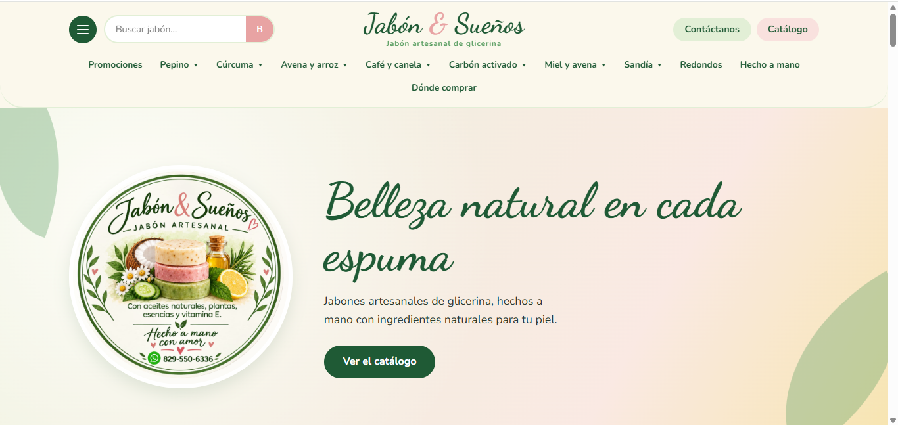

AUN NO TENEMOS VISTA PREVIA
Frontend · Comercio electrónico
Tienda online con carrito y pedidos
Interfaz de catálogo de productos con flujo de compra y opciones para facilitar el envío de pedidos por mensajería.
Soy Waner Alcequiez Ciriaco. Desarrollo interfaces frontend y mecanismos de automatización de procesos para crear experiencias digitales claras, funcionales y eficientes.
Un perfil orientado a construir herramientas digitales útiles y fáciles de utilizar.
Me enfoco en la implementación frontend y en el desarrollo de mecanismos de automatización de procesos. Me interesa convertir necesidades concretas en soluciones digitales funcionales, con interfaces claras y flujos de trabajo más eficientes.
Trabajo con tecnologías web y herramientas de programación para desarrollar sitios, interfaces y aplicaciones. En este portafolio presentaré proyectos, funcionalidades implementadas y ejemplos demostrables de mi trabajo.
Tecnologías mencionadas en mi portafolio actual, organizadas por área.
Aqui encontrarás una selección de mis proyectos más relevantes, cada uno con una breve descripción y enlaces a la demostración.
Interfaz de catálogo de productos con flujo de compra y opciones para facilitar el envío de pedidos por mensajería.
Aplicación de escritorio que automatiza cálculos de retenciones salariales y conserva datos mediante archivos JSON.

Plataforma para presentar productos de forma organizada y facilitar que los visitantes contacten al negocio.
Interfaz para organizar y mostrar servicios o comercios, con información clara para ayudar al usuario a encontrar lo que busca.
Aplicación orientada al registro y seguimiento de artículos, con funcionalidades de control y reportes según la implementación del proyecto.
PRONTO
ESTA SECCION ESTÁ EN DESARROLLO PARA QUE ME CONOZCAN UN POCO MAS
ESTA SECCION ESTÁ EN DESARROLLO PARA QUE ME CONOZCAN UN POCO MAS
Institución emisora · Año
Ver certificado ↗Institución emisora · Año
Ver certificado ↗Institución emisora · Año
Ver certificado ↗ESTE ESPACIO ES EN CASO DE QUE QUIERAN CONTACTARME PARA ALGUN SERVICIO.
Puedo colaborar en la implementación de interfaces frontend y en la construcción de herramientas digitales para automatizar tareas y organizar procesos.